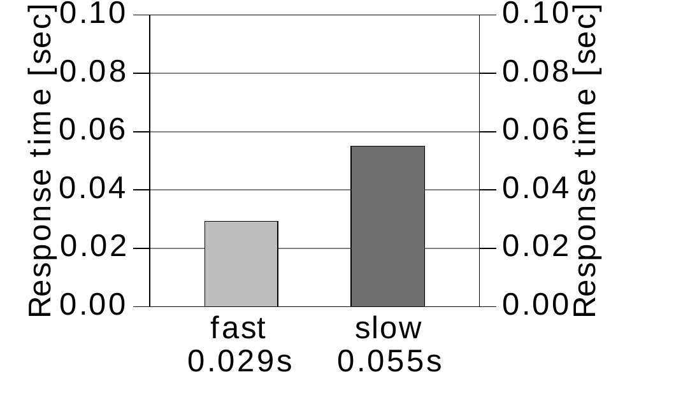
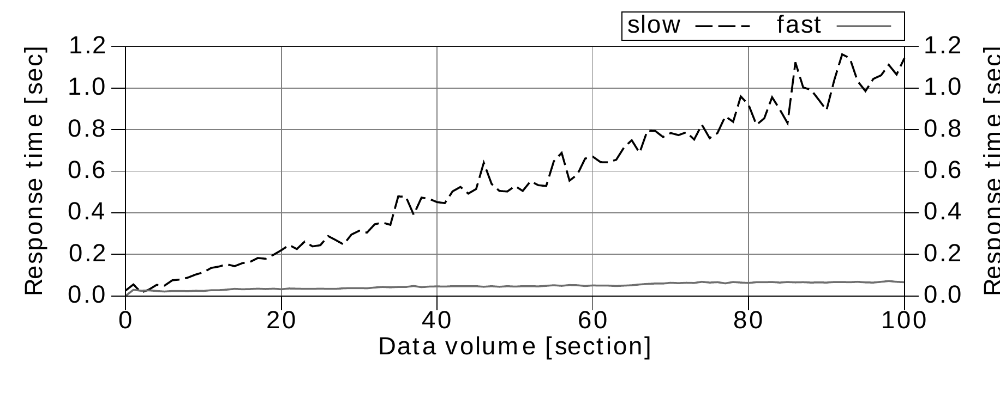
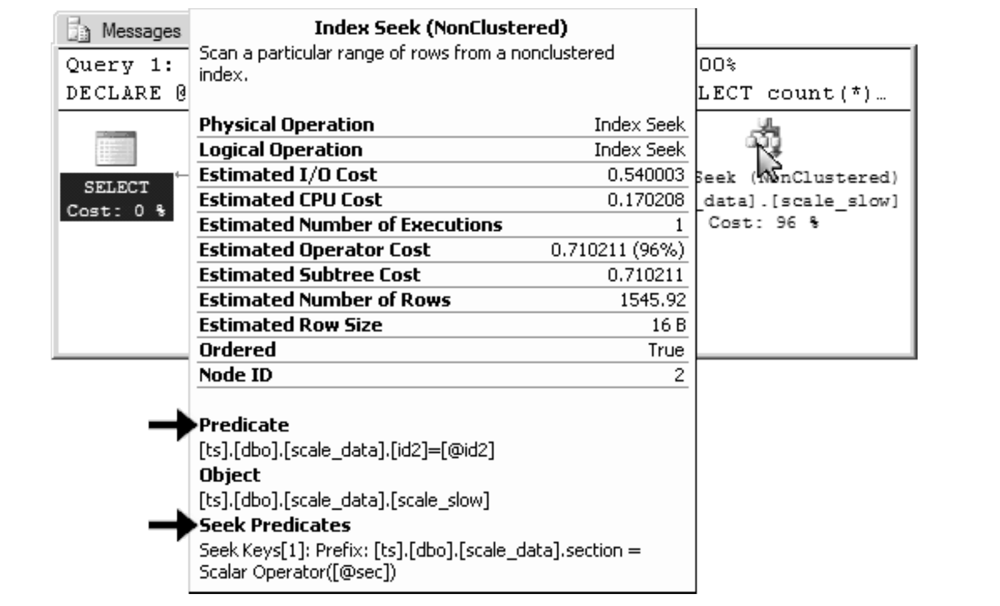
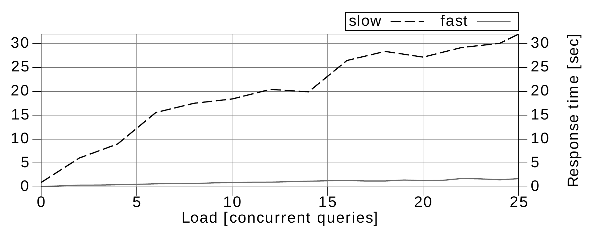

Chương 3
Performance và Khả năng mở rộng
Chương này nói về performance và scalability của database.
Trong ngữ cảnh này, tôi dùng định nghĩa sau cho scalability:
Scalability là khả năng của một system, network hoặc process xử lý được lượng công việc ngày càng tăng một cách thỏa đáng,
hoặc
khả năng được mở rộng để đáp ứng mức tăng trưởng đó.
—Wikipedia
Như bạn thấy, thực ra có tới hai định nghĩa. Định nghĩa thứ nhất nói về tác động khi tải trên một system tăng lên, còn định nghĩa thứ hai nói về việc mở rộng system để xử lý được nhiều tải hơn.
Định nghĩa thứ hai phổ biến hơn nhiều so với định nghĩa thứ nhất. Mỗi khi ai đó nói về scalability, gần như lúc nào họ cũng nói về việc dùng thêm hardware. Scale-up và scale-out là hai từ khóa tương ứng, và gần đây còn có thêm những buzzword mới như web-scale.
Nói rộng ra, scalability xét xem các thay đổi trong môi trường tác động thế nào đến performance. Hardware chỉ là một trong những parameter môi trường có thể thay đổi. Chương này cũng đề cập đến các parameter khác như data volume và system load.
Tác động của Data Volume đến Performance#
Lượng data được lưu trong database có ảnh hưởng lớn đến performance. Thông thường người ta chấp nhận rằng query sẽ chậm hơn khi database có thêm data. Nhưng performance bị ảnh hưởng nhiều đến mức nào nếu data volume tăng gấp đôi? Và làm thế nào để cải thiện tỷ lệ này? Đây là những câu hỏi then chốt khi bàn về database scalability.
Để minh họa, chúng ta sẽ phân tích response time của query dưới đây với hai index khác nhau. Definition của hai index này tạm thời được giữ kín — chúng sẽ dần được hé lộ trong quá trình phân tích.
SELECT count(*)
FROM scale_data
WHERE section = ?
AND id2 = ?Column SECTION đóng vai trò đặc biệt trong query này: nó điều khiển data volume. Giá trị SECTION càng lớn thì query càng lấy ra nhiều row. Figure 3.1 cho thấy response time với một SECTION nhỏ.

Performance của hai phương án index chênh lệch đáng kể. Cả hai response time vẫn thấp hơn nhiều so với một phần mười giây, nên trong hầu hết trường hợp query chậm hơn có lẽ vẫn đủ nhanh. Tuy nhiên, biểu đồ performance chỉ thể hiện một điểm đo. Bàn về scalability nghĩa là phải xem performance bị tác động thế nào khi các parameter môi trường thay đổi — chẳng hạn data volume.
Figure 3.2 cho thấy response time theo giá trị SECTION — tức là khi data volume tăng dần.

Biểu đồ cho thấy response time tăng lên với cả hai index. Ở phía bên phải biểu đồ, khi data volume lớn gấp một trăm lần, query nhanh hơn mất hơn gấp đôi thời gian so với ban đầu, còn response time của query chậm hơn tăng gấp 20 lần, lên tới hơn một giây.
Response time của một SQL query phụ thuộc vào nhiều factor. Data volume là một trong số đó. Một query đủ nhanh trong những điều kiện test nhất định không có nghĩa là nó cũng sẽ đủ nhanh trong production. Điều này càng đúng với những môi trường development chỉ có một phần nhỏ data so với production system.
Tuy nhiên, việc query chậm đi khi data volume tăng chẳng có gì bất ngờ. Điều hơi bất ngờ là khoảng cách rõ rệt giữa hai index. Vì sao mức tăng của hai bên lại khác nhau như vậy?
Hẳn là chỉ cần so sánh hai execution plan là dễ dàng tìm ra lý do.
------------------------------------------------------
| Id | Operation | Name | Rows | Cost |
------------------------------------------------------
| 0 | SELECT STATEMENT | | 1 | 972 |
| 1 | SORT AGGREGATE | | 1 | |
|* 2 | INDEX RANGE SCAN| SCALE_SLOW | 3000 | 972 |
------------------------------------------------------------------------------------------------------------
| Id | Operation | Name | Rows | Cost |
------------------------------------------------------
| 0 | SELECT STATEMENT | | 1 | 13 |
| 1 | SORT AGGREGATE | | 1 | |
|*2 | INDEX RANGE SCAN| SCALE_FAST | 3000 | 13 |
------------------------------------------------------Hai execution plan gần như giống hệt nhau — chỉ khác ở index được dùng. Dù cost value có phản ánh chênh lệch về tốc độ, execution plan vẫn không cho thấy lý do.
Có vẻ chúng ta đang gặp một “slow index experience”; query chậm dù có dùng index. Tuy vậy, chúng ta không còn tin vào myth về “broken index”. Thay vào đó, hãy nhớ hai yếu tố khiến index lookup chậm: (1) table access và (2) scan một index range rộng.
Không execution plan nào hiển thị operation TABLE ACCESS BY INDEX ROWID, nên một execution plan chắc chắn phải scan một index range rộng hơn execution plan kia. Vậy execution plan hiển thị index range được scan ở đâu? Tất nhiên là trong predicate information!
Predicate information tuyệt đối không phải một chi tiết thừa mà bạn có thể lược bỏ như đã làm ở trên. Execution plan không có predicate information là không đầy đủ. Vì thế, nhìn vào các plan ở trên, bạn không thể thấy lý do của chênh lệch performance. Nếu xem execution plan đầy đủ, chúng ta sẽ thấy khác biệt.
-----------------------------------------------------
| Id | Operation | Name | Rows | Cost |
-----------------------------------------------------
| 0 | SELECT STATEMENT | | 1 | 972 |
| 1 | SORT AGGREGATE | | 1 | |
|* 2 | INDEX RANGE SCAN| SCALE_SLOW | 3000 | 972 |
-----------------------------------------------------
Predicate Information (identified by operation id):
2 - access("SECTION"=TO_NUMBER(:A))
filter("ID2"=TO_NUMBER(:B))-----------------------------------------------------
| Id | Operation | Name | Rows | Cost |
-----------------------------------------------------
| 0 | SELECT STATEMENT | | 1 | 13 |
| 1 | SORT AGGREGATE | | 1 | |
|* 2 | INDEX RANGE SCAN| SCALE_FAST | 3000 | 13 |
-----------------------------------------------------
Predicate Information (identified by operation id):
2 - access("SECTION"=TO_NUMBER(:A) AND "ID2"=TO_NUMBER(:B))Khác biệt giờ đã rõ: khi dùng index SCALE_SLOW, chỉ điều kiện trên SECTION là access predicate. Database đọc mọi row trong section rồi loại những row không khớp filter predicate trên ID2. Response time tăng theo số row trong section. Với index SCALE_FAST, database dùng mọi điều kiện làm access predicate. Response time tăng theo số row mà query chọn ra.
Những mảnh ghép cuối cùng còn thiếu trong câu đố là các index definition. Chúng ta có thể suy ra index definition từ execution plan không?
Definition của index SCALE_SLOW phải bắt đầu bằng column SECTION — nếu không, column này đã không thể được dùng làm access predicate. Điều kiện trên ID2 không phải access predicate — vì vậy column đó không thể đứng sau SECTION trong index definition. Như vậy, index SCALE_SLOW phải có tối thiểu ba column, trong đó SECTION là column đầu tiên và ID2 không phải column thứ hai. Index definition dùng trong test này đúng là như vậy:
CREATE INDEX scale_slow ON scale_data (section, id1, id2);Database không thể dùng ID2 làm access predicate vì column ID1 đứng ở vị trí thứ hai.
Definition của index SCALE_FAST phải có column SECTION và ID2 ở hai vị trí đầu vì cả hai đều được dùng làm access predicate. Tuy vậy, chúng ta không thể nói gì về thứ tự của chúng. Index được dùng cho test bắt đầu bằng column SECTION và có thêm column ID1 ở vị trí thứ ba:
CREATE INDEX scale_fast ON scale_data (section, id2, id1);Column ID1 chỉ được thêm vào để index này có cùng kích thước với SCALE_SLOW — nếu không, bạn có thể nghĩ rằng kích thước là nguyên nhân tạo ra khác biệt.
Tác động của System Load đến Performance#
Khi định nghĩa một multi-column index, người ta thường thôi cân nhắc ngay khi thấy index đó được dùng cho query đang tune. Tuy nhiên, optimizer không dùng một index vì đó là index “đúng” cho query, mà vì nó hiệu quả hơn full table scan. Điều đó không có nghĩa index này là index tối ưu cho query.
Ví dụ trước đã cho thấy việc nhận ra column order sai trong execution plan khó khăn thế nào. Predicate information rất thường bị giấu khá kỹ, nên bạn phải chủ động tìm nó để kiểm tra xem index có được dùng tối ưu hay không.
Chẳng hạn, SQL Server Management Studio chỉ hiển thị predicate information dưới dạng tool tip khi di chuột lên index operation (“hover”). Execution plan sau dùng index SCALE_SLOW, vì vậy điều kiện trên ID2 được hiển thị dưới dạng filter predicate (chỉ là “Predicate”, không có Seek).

Lấy predicate information từ execution plan của MySQL hoặc PostgreSQL thậm chí còn phiền phức hơn. Chi tiết có trong Appendix A ở page 165.
Trong execution plan, predicate information trông có vẻ không đáng kể đến đâu đi nữa thì nó vẫn ảnh hưởng lớn đến performance — nhất là khi system lớn dần. Hãy nhớ rằng không chỉ data volume tăng lên mà cả access rate cũng tăng. Đây là thêm một parameter nữa của scalability function.
Figure 3.4 biểu diễn response time theo access rate — data volume giữ nguyên. Biểu đồ này thể hiện execution time của chính query trước đó và luôn dùng section có data volume lớn nhất. Nghĩa là điểm cuối cùng của Figure 3.2 ở page 81 tương ứng với điểm đầu tiên trong chart này.

Đường nét đứt biểu diễn response time khi dùng index SCALE_SLOW. Response time này tăng lên đến 32 giây khi có 25 query chạy đồng thời. So với response time khi không có background load — như trường hợp có thể gặp trong môi trường development của bạn — query mất thời gian gấp 30 lần. Ngay cả khi môi trường development của bạn có một bản sao đầy đủ của production database, background load vẫn có thể khiến query chạy chậm hơn nhiều trong production.
Đường liền biểu diễn response time khi dùng index SCALE_FAST — index này không có filter predicate nào. Response time vẫn thấp hơn hai giây khá xa, ngay cả khi có 25 query chạy đồng thời.
Response Time và Throughput#
Response time đáng ngờ thường bị xem nhẹ trong quá trình development. Phần lớn là vì chúng ta kỳ vọng “production hardware mạnh hơn” sẽ mang lại performance tốt hơn. Nhưng phần nhiều lại là ngược lại, vì production infrastructure phức tạp hơn và tích lũy những latency không xuất hiện trong môi trường development. Ngay cả khi test trên infrastructure tương đương production, background load vẫn có thể gây ra response time khác nhau. Ở phần tiếp theo, chúng ta sẽ thấy rằng nhìn chung không nên kỳ vọng “hardware lớn hơn” sẽ cho response nhanh hơn.
Hardware lớn hơn không phải lúc nào cũng nhanh hơn — nhưng thường có thể xử lý nhiều load hơn. Hardware lớn hơn giống một xa lộ rộng hơn, chứ không giống một chiếc xe nhanh hơn: bạn không thể lái nhanh hơn — à, đúng ra là không được phép — chỉ vì có thêm làn đường. Đó là lý do vì sao thêm hardware không tự động khiến SQL query chậm trở nên nhanh hơn.
Chúng ta không còn ở những năm 1990 nữa. Khi đó, computing power của single-core CPU tăng rất nhanh. Phần lớn vấn đề về response time tự biến mất khi chuyển sang hardware mới — chỉ nhờ CPU mạnh hơn. Cứ như thể năm nào các mẫu xe mới cũng chạy nhanh gấp đôi mẫu cũ vậy! Tuy nhiên, sức mạnh của single-core CPU đã chạm trần trong vài năm đầu của thế kỷ 21. Trên trục này gần như không còn cải thiện gì nữa. Để tiếp tục tạo ra CPU ngày càng mạnh, vendor phải chuyển sang chiến lược multi-core. Dù chiến lược này cho phép nhiều task chạy đồng thời, nó không cải thiện performance nếu chỉ có một task. Performance có nhiều hơn một chiều.
Scaling theo chiều ngang (thêm server) cũng có những giới hạn tương tự. Dù nhiều server có thể xử lý nhiều request hơn, chúng không cải thiện response time của một query cụ thể. Để tìm kiếm nhanh hơn, bạn cần một search tree hiệu quả — kể cả trong các hệ thống non-relational như CouchDB và MongoDB.
Indexing đúng cách nhằm khai thác trọn vẹn scalability dạng logarithmic của B-tree index. Đáng tiếc là indexing thường bị làm rất cẩu thả. Chart trong “Performance Impacts of Data Volume” cho thấy rõ tác động của việc indexing cẩu thả.

Khác biệt response time giữa một index cẩu thả và một index đúng cách thật đáng kinh ngạc. Gần như không thể bù đắp tác động này bằng cách thêm hardware. Ngay cả khi bạn giảm được response time bằng hardware, vẫn cần đặt câu hỏi liệu đó có phải giải pháp tốt nhất cho vấn đề này hay không.
Nhiều hệ thống gọi là NoSQL vẫn tuyên bố có thể giải quyết mọi vấn đề performance bằng horizontal scalability. Tuy nhiên, scalability này phần lớn chỉ giới hạn ở write operation và đạt được nhờ cái gọi là eventual consistency model. SQL database dùng strict consistency model, khiến write operation chậm hơn, nhưng điều đó không nhất thiết đồng nghĩa với throughput kém. Hãy tìm hiểu thêm trong box có tiêu đề “Eventual Consistency and the CAP Theorem”.
Thêm hardware thường không cải thiện response time. Trên thực tế, thêm hardware thậm chí có thể làm system chậm đi, vì độ phức tạp tăng thêm có thể kéo theo nhiều latency hơn. Network latency sẽ không thành vấn đề nếu application và database chạy trên cùng một computer, nhưng setup này khá hiếm trong production environment, nơi database và application thường được cài trên hardware riêng. Security policy thậm chí có thể yêu cầu firewall giữa application server và database — thường làm network latency tăng gấp đôi. Infrastructure càng phức tạp thì càng tích lũy nhiều latency và response càng chậm. Hiệu ứng này thường dẫn đến một quan sát trái với trực giác: production hardware đắt tiền lại chậm hơn môi trường desktop PC rẻ tiền dùng cho development.
Eventual Consistency và CAP Theorem#
Để duy trì strict consistency trong một distributed system, mọi write operation phải được phối hợp đồng bộ giữa các node. Nguyên tắc này có hai side effect khó chịu: (1) nó làm tăng latency và kéo dài response time; (2) nó làm giảm overall availability, vì nhiều member phải cùng available tại một thời điểm thì mới hoàn tất được một write operation.
Distributed SQL database thường bị nhầm với computer cluster dùng shared storage system hoặc master-slave replication. Thực tế, distributed database giống một web shop tích hợp với ERP system hơn — thường là hai product khác nhau của hai vendor khác nhau. Consistency giữa hai system vẫn là một mục tiêu đáng mong muốn và thường đạt được nhờ two-phase commit (2PC) protocol. Protocol này thiết lập các global transaction, mang lại behavior “all-or-nothing” quen thuộc trên nhiều database. Một global transaction chỉ có thể hoàn tất nếu mọi member tham gia đều available. Vì vậy, protocol này làm giảm overall availability.
Distributed system càng có nhiều node thì strict consistency càng trở nên khó khăn. Khi system có nhiều hơn vài node, việc duy trì strict consistency gần như là không thể. Ngược lại, từ bỏ strict consistency sẽ giải quyết được vấn đề availability và loại bỏ phần response time tăng thêm. Ý tưởng cơ bản là tái lập global consistency sau khi hoàn thành write operation trên một subset của các node. Cách tiếp cận này chỉ để lại một vấn đề chưa giải quyết: nếu hai node chấp nhận những thay đổi mâu thuẫn nhau thì không thể ngăn conflict. Rốt cuộc, consistency đạt được nhờ xử lý conflict, chứ không phải nhờ ngăn chặn chúng. Trong ngữ cảnh đó, consistency có nghĩa là mọi node có cùng data — đó không nhất thiết là data đúng hay tốt nhất.
CAP Theorem của Brewer mô tả các dependency tổng quát giữa Consistency, Availability và Partition tolerance.
Một latency khác rất quan trọng là disk seek time. Spinning hard disk drive (HDD) cần khá nhiều thời gian để di chuyển các bộ phận cơ học đến vị trí có thể đọc data được yêu cầu — thường là vài millisecond. Latency này xuất hiện bốn lần khi duyệt một B-tree bốn level — tổng cộng vài chục millisecond. Với computer, khoảng thời gian đó dài như nửa kiếp người, nhưng nó vẫn thấp hơn rất nhiều so với ngưỡng cảm nhận của chúng ta… nếu chỉ xảy ra một lần. Tuy nhiên, chỉ một SQL statement cũng rất dễ gây ra hàng trăm, thậm chí hàng nghìn lần disk seek, đặc biệt khi kết hợp nhiều table bằng join operation. Dù caching đã giảm vấn đề này đáng kể và công nghệ mới như SSD giảm seek time đi một order of magnitude, join nhìn chung vẫn bị nghi là chậm. Vì vậy, chương tiếp theo sẽ giải thích cách dùng index để join table hiệu quả.
Ổ đĩa thể rắn (SSD) và Caching#
Solid State Disk (SSD) là công nghệ mass storage không có bộ phận chuyển động. Seek time điển hình của SSD nhanh hơn seek time của HDD một order of magnitude. SSD bắt đầu có mặt trong enterprise storage từ khoảng năm 2010, nhưng do chi phí cao và tuổi thọ có giới hạn, chúng chưa được dùng phổ biến cho database.
Tuy nhiên, database lại cache những data được truy cập thường xuyên trong main memory. Điều này đặc biệt hữu ích với data cần cho mọi index access — chẳng hạn index root node. Database có thể cache toàn bộ các index được dùng thường xuyên, nhờ đó một index lookup không gây ra dù chỉ một lần disk seek.